Gilbert Gitamo
Aquaculture Technical Specialist
With over 15 years of aquaculture experience across East Africa, Gilbert is an expert in hatchery management, fish nutrition and feed strategies. At Jambo Aqua Tech, Gilbert leads business strategy, farmer support, and regional partnerships.
Joeline Ezekiel
Aquaculture Expert & Technical Trainer
Joeline brings both academic and hands-on expertise in aquaculture systems, fish nutrition, and sustainability. Passionate about empowering women and youth, she is dedicated to nurturing inclusive aquaculture enterprises across the region.
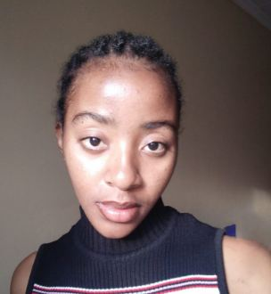
Rita Kerubo
IT Specialist & Digital Innovation Lead
A strong believer in aquaculture's role in solving food security, Rita drives tech-based innovation in fish farming. She is the architect behind JAT Virtual Manager™, a precision aquaculture tool designed to make fish farming smarter and data-driven.

Esther Akoth
Hatchery Management Specialist
Esther oversees daily hatchery operations, ensuring consistent production of high-quality fingerlings. With a passion for genetics, she focuses on improving early-stage survival rates. Esther champions training to promote backyard and urban aquaculture.
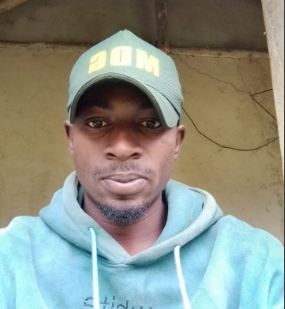
Lucas Otieno
Aquaculture Systems Engineer
Lucas has spent over two years refining skills in broodstock management, system maintenance, and disease prevention. He is the founder of the Jambo Youth in Aquaculture initiative, inspiring the next generation to embrace fish farming.
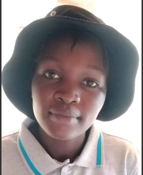
Hellen Kiptoo
Fingerlings Production Assistant
With 2 years of experience, Hellen is dedicated to solving the region's fingerling shortage. She focuses on optimizing RAS systems to produce healthy, disease-free fingerlings in large volumes, making her vital to Jambo's mission.
Duncan Ochieng
Broodstock Supervisor
Once a fisherman on Lake Victoria, Duncan now manages broodstock selection and care. His deep understanding of fish behavior and breeding ensures top genetic quality and high fecundity for consistent fry production.

Maxwell Ochieng
Logistics & Youth Engagement
Maxwell ensures safe delivery of fingerlings to farmers. Passionate about youth empowerment, he recruits and trains young people in fingerling nursing through the Jambo Youth in Aquaculture initiative.

 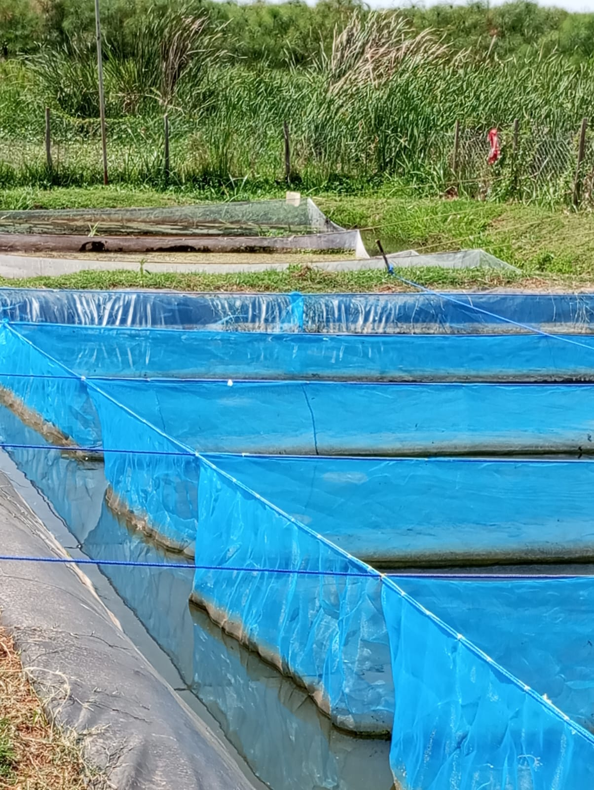
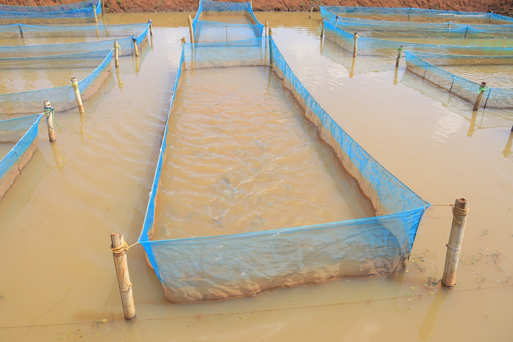
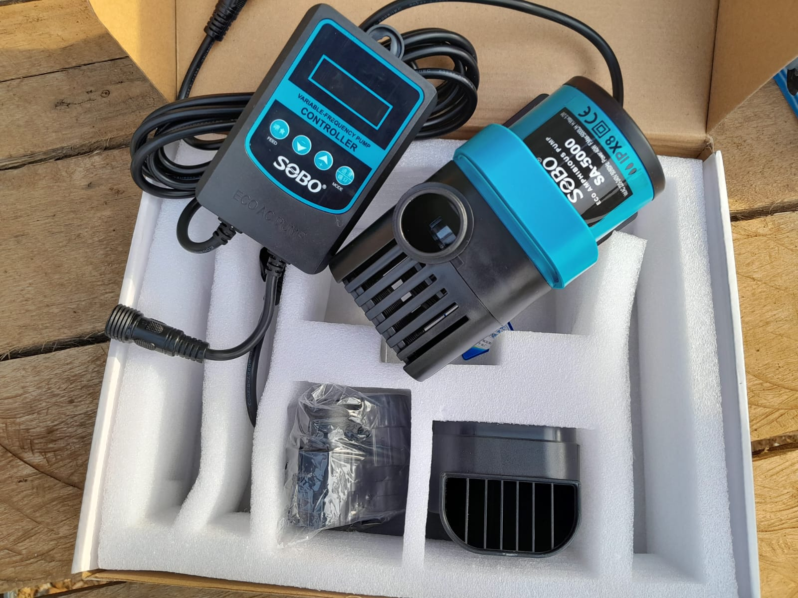
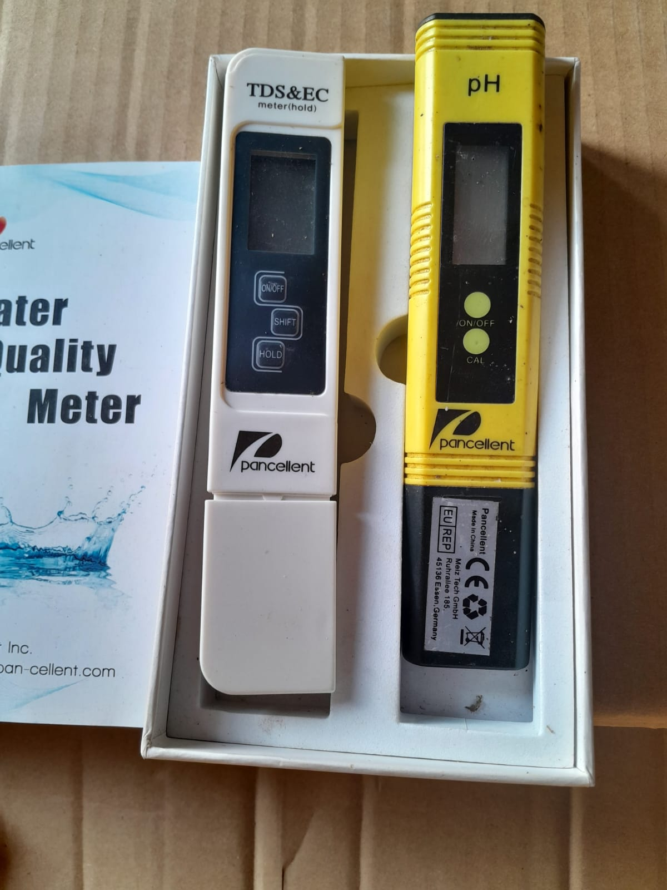
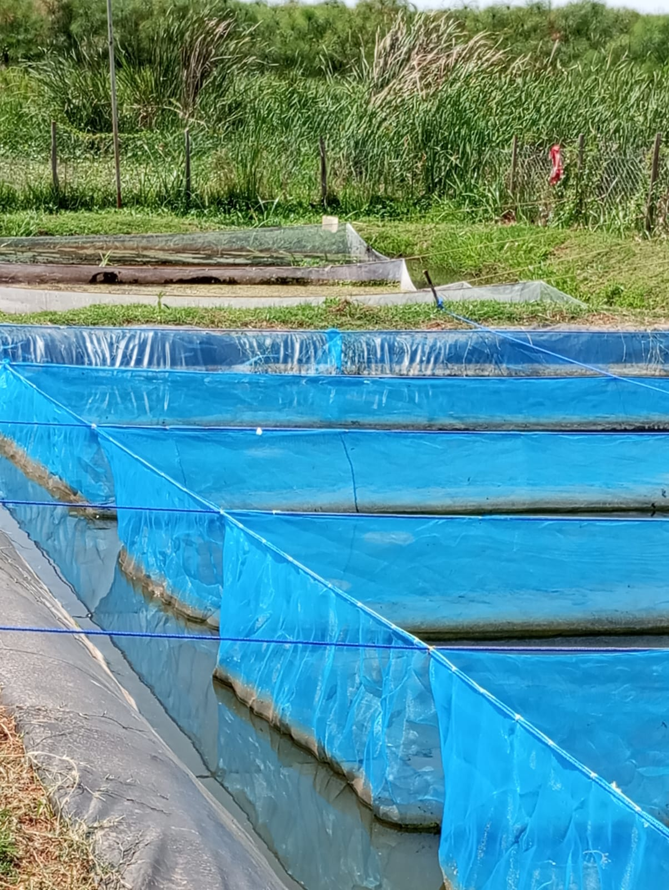
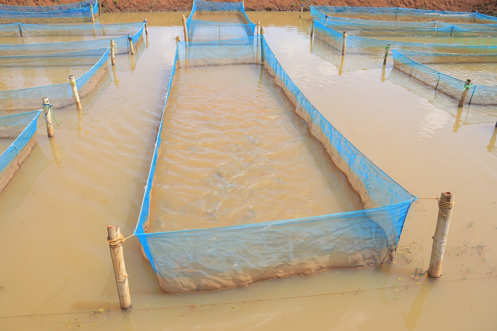
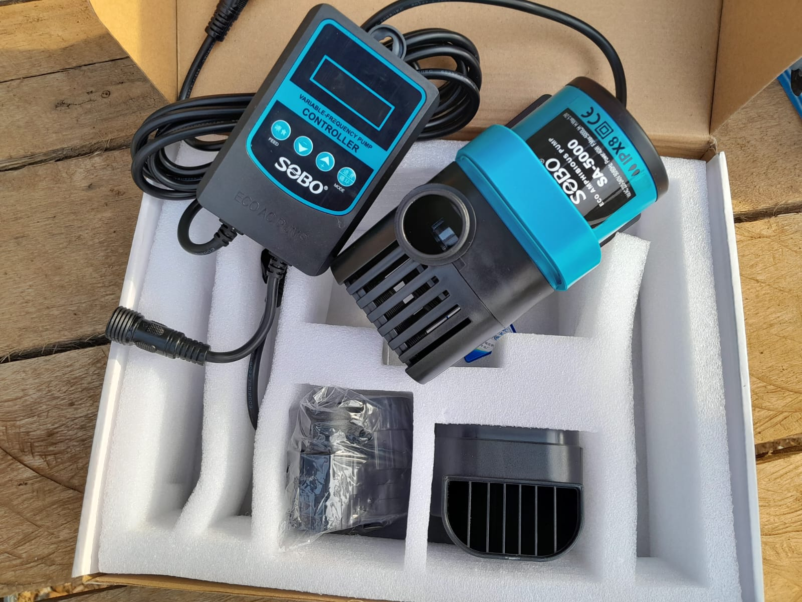
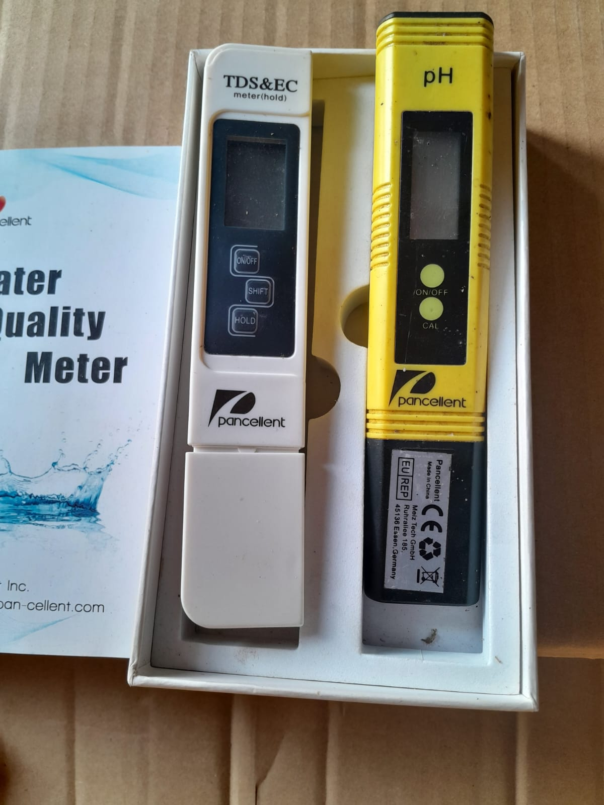